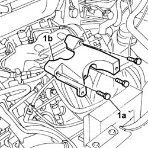
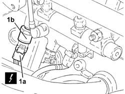

1060G28 FUEL PRESSURE SENSOR - R R
- Path
- Procedures > 10 ENGINE > 1060 DIESEL INJECTION SYSTEM > 1060G DIESEL INJECTION PRESSURE PUMP ELECTRONIC CONTROL > 1060G28 FUEL PRESSURE SENSOR - R R
- Kind
- repair procedure (removal / refitting; the operation number is the code)
- Applies to
- engines: 2.0 16V JTD, 2.2 16V JTD; all production periods
- Interactive page
- https://sloeber94.github.io/elrnDB-fUlss/en/#/179007057
Applies to: engines: 2.0 16V JTD; all production periods
 Removing
Removing
 Refitting
RefittingSee in Op. 1044B10
1. Undo the fixing bolts (1a) and remove the fuel filter mount (1b).

Applies to: engines: 2.0 16V JTD; all production periods
1. Disconnect the electrical connection (1a) and undo and remove the fuel pressure sensor (1b).

Applies to: engines: 2.0 16V JTD; all production periods
Refitting
Removing- Place the fuel sensor in position and tighten it to torque.
- Connect the electrical connection for the sensor.
- Place the fuel filter mounting in position and tighten the fixing bolts.
See in Op. 1044B10
Applies to: engines: 2.2 16V JTD; all production periods
Removing
RefittingSee in Op. 1044B10
1. Undo the fixing bolts (1a) and remove the fuel filter mount (1b).
Applies to: engines: 2.2 16V JTD; all production periods
1. Disconnect the electrical connection (1a) and undo and remove the fuel pressure sensor (1b).
Applies to: engines: 2.2 16V JTD; all production periods
Refitting
Removing- Place the fuel sensor in position and tighten it to torque.
- Connect the electrical connection for the sensor.
- Place the fuel filter mounting in position and tighten the fixing bolts.
See in Op. 1044B10